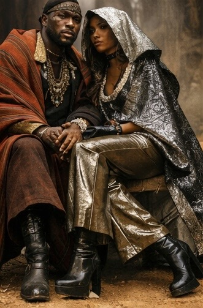
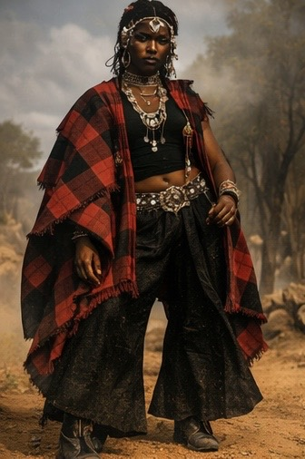
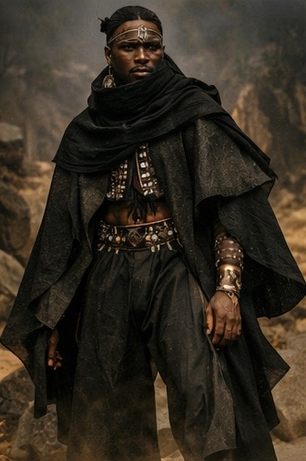
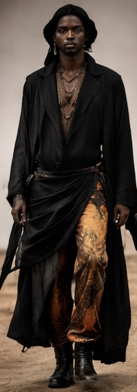
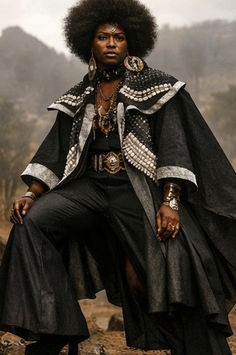
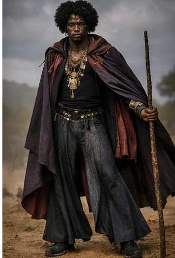
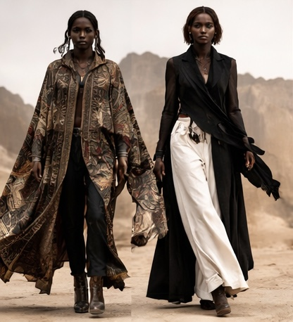
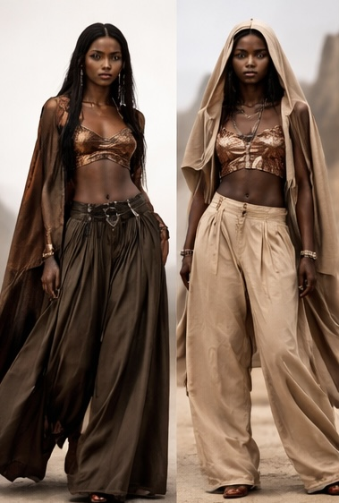

The Barakoa Aesthetic Theme: NiloFunk



NiloFunk is the aesthetic language guiding Barakoa’s music, fashion and styling.
It’s a fusion of:
- Nilo — Nilotic cultural references featuring traditional motifs across Nile communities
- Funk — the bold, expressive silhouettes and textures of 1970s–80s African American funk aesthetics
- Contemporary Finish — modern reinterpretation of Nilo and Funk aesthetics, blending traditional elements with contemporary design
What Fabri borrows from Nilotic dress logic :
the 'Nilo' in NiloFunk

Blanket logic:
the use of cloaks, shukas, shawls,(draped, not layered) etc as outerwear for protection, warmth, and modesty

Layering:
the strategic use of multiple garments to create depth, warmth, and visual interest. Nilotes layer garments to adapt to climate and ceremony.

Flow and volume:
clothing that responds to wind, walking, dancing, sitting

Adornment as signal:
beads, metal, leather used to mark status, ritual, or moment — and removed when needed
What Fabri borrows from Afro-American Funk :
the 'Funk' in NiloFunk

bold silhouettes

flared shapes

expressive colour and texture

performance embedded into everyday wear
Nilofunk emerges where functionality meets audacity.